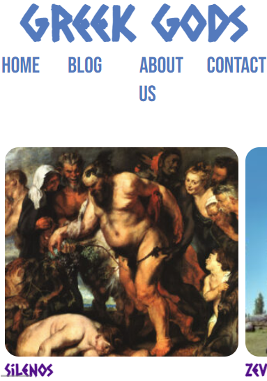
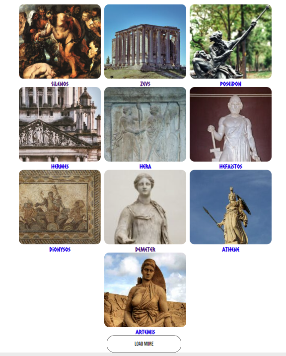
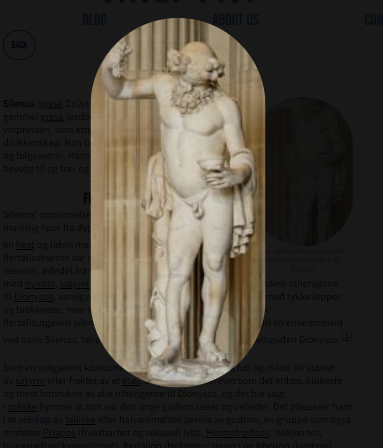
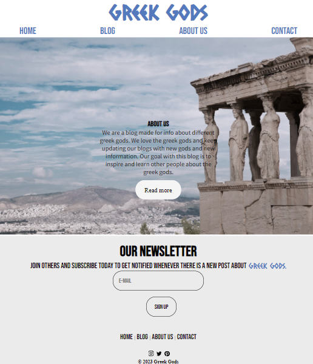

GRESKE GUDER
Dette var eksamen min, her gikk oppgaven ut på å lage en blogg der du selv valgte tema. Jeg valgte temaet greske guder.
Vi skulle ha en carousel/slider for noen poster som ble hentet ut fra et WP api. I tillegg skulle vi ha en bloggside, about og kontakt.
Bloggsiden skulle ha mulighet for å få id slik at du kunne gå inn på hver bloggpost. Bildet her viser til forsiden på mobil. Der jeg hadde slider uten knapper og bare slidefunskjon.
Vi skulle ha en carousel/slider for noen poster som ble hentet ut fra et WP api. I tillegg skulle vi ha en bloggside, about og kontakt.
Bloggsiden skulle ha mulighet for å få id slik at du kunne gå inn på hver bloggpost. Bildet her viser til forsiden på mobil. Der jeg hadde slider uten knapper og bare slidefunskjon.

PROSESSEN
Prosessen startet på figma og design av nettsiden. Dette gikk veldig fint og hentet litt inspirasjon fra forskjellige blogger. Jeg hadde fem uker på meg og laget en liten plan for å holde meg til tiden jeg hadde.
På bildet ser du en ny funksjon som måtte være med. En load more knapp som skulle laste inn neste side av postene hentet fra WP.
På bildet ser du en ny funksjon som måtte være med. En load more knapp som skulle laste inn neste side av postene hentet fra WP.

TEKNOLOGI
I denne oppgaven skulle jeg bruke HTML, CSS og Javascript. Så det var altså det jeg brukte. Oppgaven skulle også inneholde en modalfunksjon som et av kriteriene.
På bildet her ser du hvordan det så ut hos meg.
På bildet her ser du hvordan det så ut hos meg.

LÆRING
Denne oppgaven gjorde meg bedre i HTML, CSS og Javascript. Den gjorde også at jeg måtte lære meg å lage modal og carousel.Som jeg aldri hadde gjort før, men det ble veldig bra tilslutt.
Jeg var veldig fornøyd med nettsiden, men kunne gjort småting bedre og kanskje gjort det litt bedre på mobilversjonen. Designet ser ok ut, men mener også her at jeg kunne gjort en litt bedre jobb.
Bildet som ligger ved her, er aboutsiden min og avbildning av footeren. Footeren ser ganske bra ut mener jeg.
Jeg var veldig fornøyd med nettsiden, men kunne gjort småting bedre og kanskje gjort det litt bedre på mobilversjonen. Designet ser ok ut, men mener også her at jeg kunne gjort en litt bedre jobb.
Bildet som ligger ved her, er aboutsiden min og avbildning av footeren. Footeren ser ganske bra ut mener jeg.